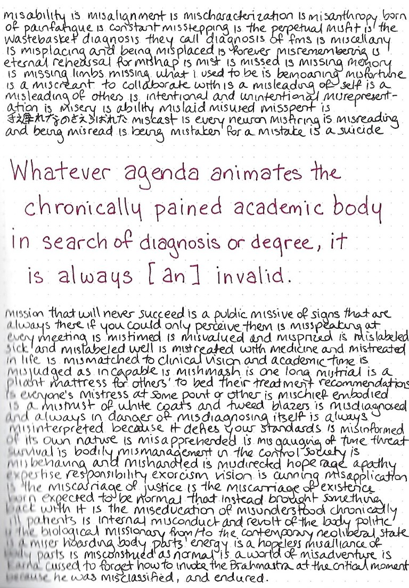

A handwritten page, on which is centered, in red-ink text: "Whatever agenda animates the chronically pained academic body in search of diagnosis or degree, it is always [an] invalid." Framing this sentence are black-ink words: "misability is misalignment is mischaracterization is misanthropy born of painfatigue is constant misstepping is the perpetual misfit is the wastebasket diagnosis they call diagnosis of fms is miscellany is misplacing and being misplaced is forever misremembering is eternal rehearsal for mishap is mist is missed is missing memory is missing limbs missing what i used to be is bemoaning misfortune is a miscreant to collaborate with is a misleading of self is a misleading of others is intentional and unintentional misrepresentation is misery is ability mislaid misused misspent is teokure na no sa erabareta miscast is every neuron misfiring is misreading and being misread is being mistaken for a mistake is a suicide mission that will never succeed is a public missive of signs that are always there if you could only perceive them is misspeaking at every meeting is mistimed is misvalued and mispriced is mislabeled sick and mislabeled well is mistreated with medicine and mistreated in life is mismatched to clinical vision and academic time is misjudged as incapable is mishmash is one long mistrial is a pliant mattress for others to bed their treatment recommendations is everyone's mistress at some point or other is mischief embodied is a mistrust of white coats and tweed blazers is misdiagnosed and always in danger of misdiagnosing itself is always misinterpreted because it defies your standards is misinformed of its own nature is misapprehended is misgauging of time threat survival is bodily mismanagement in the control society is misbehaving and mishandled is misdirected hope rage apathy expertise responsibility exorcism vision is cunning misapplication is the miscarriage of justice is the miscarriage of existence born expected to be normal that instead brought something back with it is the miseducation of misunderstood chronically ill patients is internal misconduct and revolt of the body politic is the biological missionary from/to the contemporary neoliberal state is a miser hoarding body parts' energy is a hopeless misalliance of body parts is misconstrued as normal is a world of misadventure is Karna cursed to forget how to invoke the Brahmastra at the critical moment because he was misclassified, and endured."